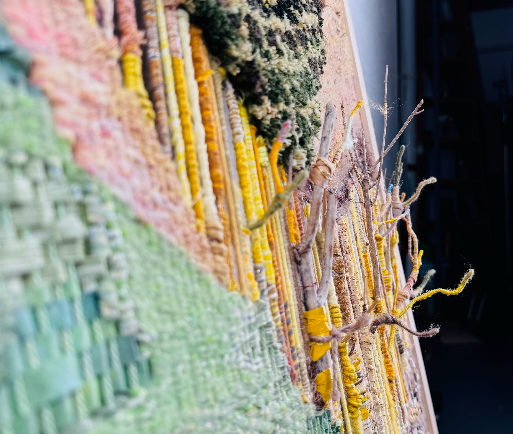

这幅作品灵感来源于梵高的《星空》，但通过现代色彩和技法重新诠释。 浓郁的色彩和丰富的笔触，表达了对宇宙无限可能性的向往和探索。 作品曾在2023年城市艺术展中展出并获得最佳创新奖。



《自然之灵》系列作品探索了人类与自然的和谐关系，通过数字艺术的形式展现了自然的神秘与美丽。 这组作品采用了混合媒介技术，结合传统绘画和数字处理，创造出独特的视觉体验。 作品曾在国际数字艺术展中展出并获得广泛好评。


《光影人像》系列探索了光线与人物的互动关系，通过精心设计的光影效果， 展现了人物内心世界的复杂性和多样性。这组作品采用了自然光和人工光的结合， 创造出独特的视觉氛围。作品曾发表在《摄影艺术》杂志上。


《东方元素》系列设计作品融合了传统东方文化元素与现代设计语言， 创造出既有文化底蕴又符合当代审美的视觉体验。这组作品包括图案设计、 包装设计和视觉识别系统，曾获得亚洲设计大奖。

《梦境漫游》插画系列作品灵感来源于潜意识和梦境，通过丰富的色彩和 奇特的构图，展现了一个超现实的梦幻世界。这组作品采用了数字绘画技术， 曾为多部文学作品和音乐专辑创作封面插画。


《空间重构》是一组探索几何形态与空间关系的装置艺术作品。 通过金属、玻璃和光影的组合，创造出不断变化的视觉体验。 这组作品曾在当代艺术博物馆展出，获得了广泛的关注和好评。


《流动的时间》系列雕塑作品探索了时间与形态的关系， 通过青铜和大理石材料的结合，创造出看似流动却静止的视觉效果。 作品曾在国际雕塑展中获奖，并被多家艺术机构收藏。


《城市边缘》是一组记录城市与自然交界处的摄影作品， 通过黑白摄影的形式，展现了现代都市的另一面。 这组作品曾在国际摄影节展出，并出版了同名摄影集。


《虚拟自然》系列作品探索了数字技术与自然的融合， 通过生成艺术算法，创造出看似自然却非自然的视觉景观。 这组作品曾在数字艺术节展出，并获得了创新技术奖。

《记忆碎片》是一组结合绘画、拼贴和数字技术的混合媒介作品， 通过碎片化的视觉元素，探讨了记忆与身份的关系。 这组作品曾在当代艺术双年展中展出，获得了年轻艺术家奖。